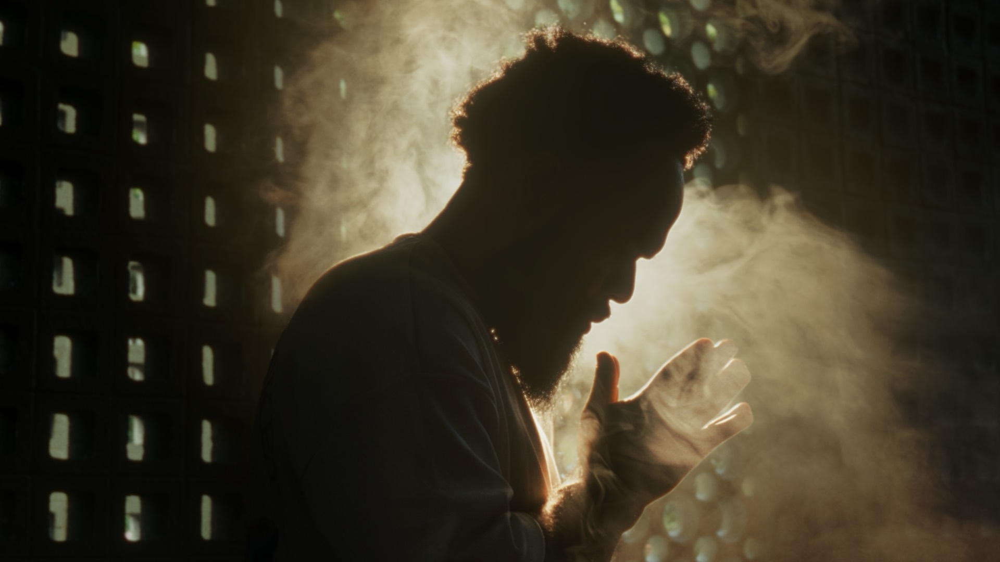
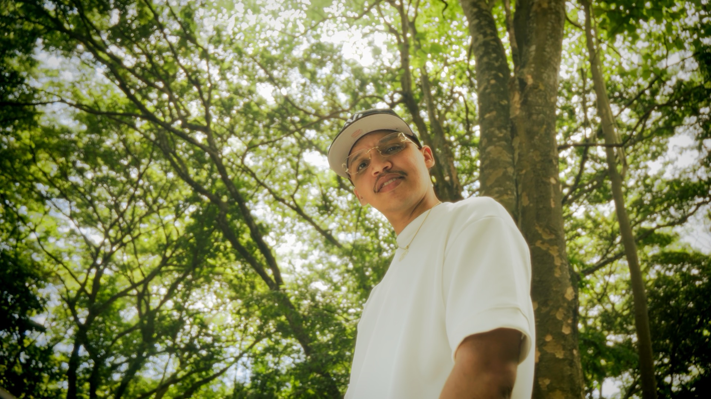
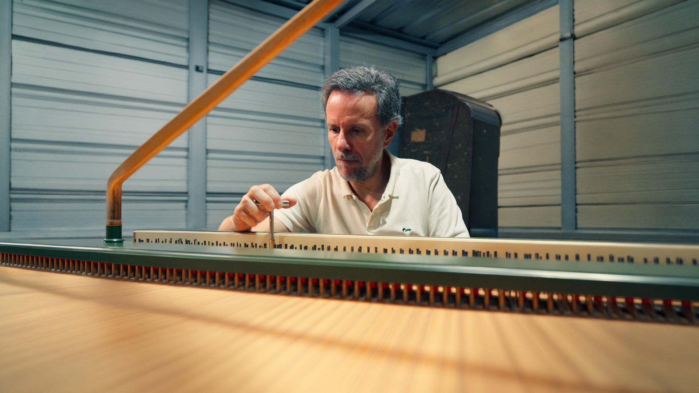

Filmmaker · Editor · Santo Domingo
Scroll
Poka, filmmaker y editor en Santo Domingo
Dirección, fotografía y edición enfocadas en resolver necesidades audiovisuales. Me encargo de todo el proceso creativo, desde la idea hasta la entrega final.
Ver Proyectos →




